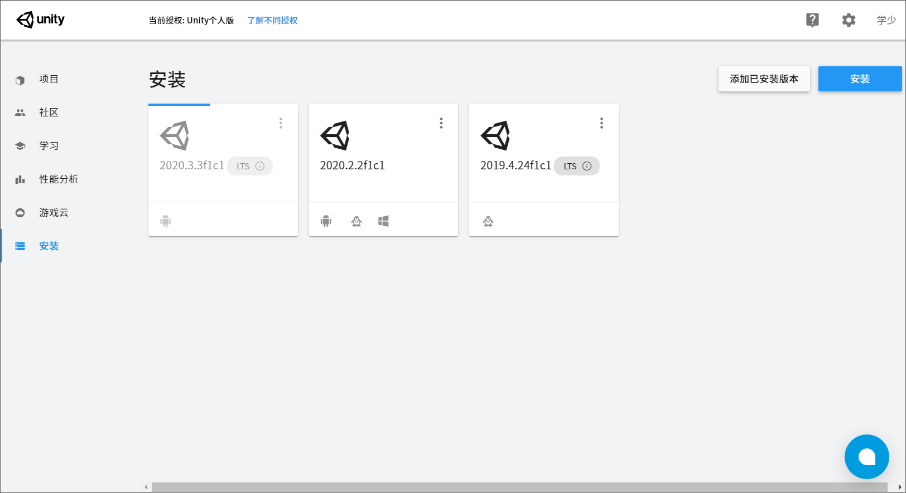
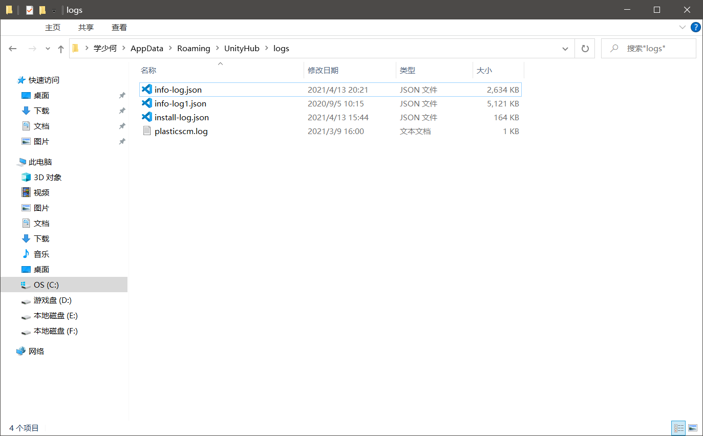
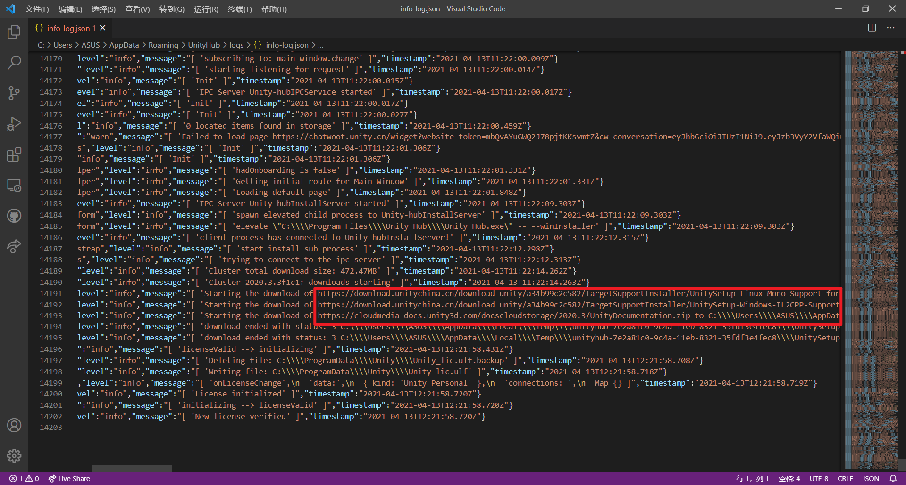
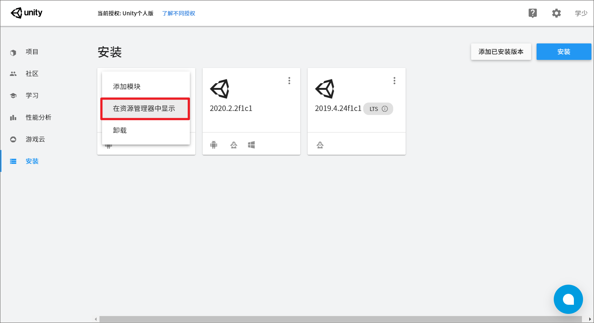

这两天折腾Unity，之前的Unity没法发布Android包，没有办法，去下载新的长期支持的版本。但是要不就是安装成功了但是我选择的模块指安装了一部分，要不然就是卡住了。
安装了一部分，之后继续安装其他的模块卡住是我没想到的。既没有报错也没有任何提示。

在网上搜索了一阵才找到合适的方法（不一定是最佳的解决办法）。记录下来以便之后翻阅。
安装不成功的因素
个人觉得一个是网络，二个是也许没有给管理员权限。而后者一般是没有问题的，所以主要原因可能出在前者。
但是其实细细深入一下，会发现也不一定就是网络的锅。
解决方法
为了了解到Unity安装不同的模块到底下载了什么东西，需要找到安装日志。
打开路径%APPDATA%\UnityHub\logs，如果执行过安装操作，一般会有一个info-log.json的文件。

打开它，翻到文件末尾，根据选择模块的不同会看到不同的内容，不过大致应该相同，会有文件的链接。

我这里在UnityHub中选择的是三个模块，所以这里是三个链接，把这三个链接分别复制到浏览器或者下载器里下载然后安装就行了。
其中比较特殊的是文档，需要自行解压到UnityHub目录的\Editor\[Unity版本（缺省值）]\Editor\Data下。快捷打开之间按安装好的UnityEditor右上角的三个点，里面的菜单有一个在资源管理器中显示。

其他的错误
在安装其他模块，比如安卓构建模块或者Windows-IL2CPP支持的时候，也许会提示UnityHub或UnityEditor正在运行。
如果将这两个关闭之后依旧会有提示，那么就需要在Editor目录将\Data\PlaybackEngines下相应的模块文件夹删掉，然后再进行安装这样就没有问题了。
最后的问题
这样进行安装有一个坏处，那就是UnityHub并不会将自行安装的模块进行显示，并且在添加模块处依旧需要安装这些模块。但其实这些模块已经安装完成了！并不需要再进行安装了。
我暂未找到解决方法。不过Unity可以正常使用了，对应模块的支持能够使用。